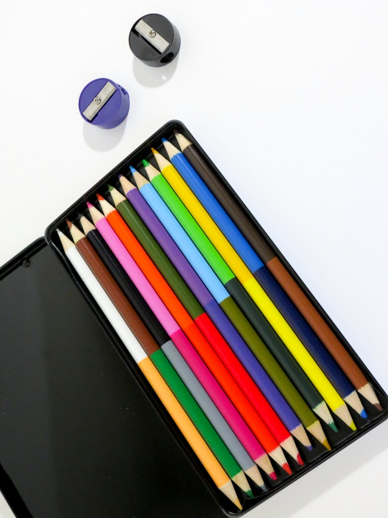
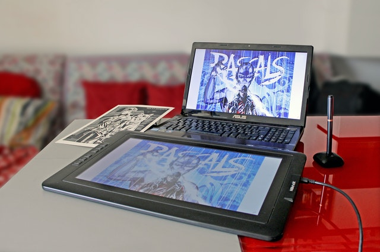
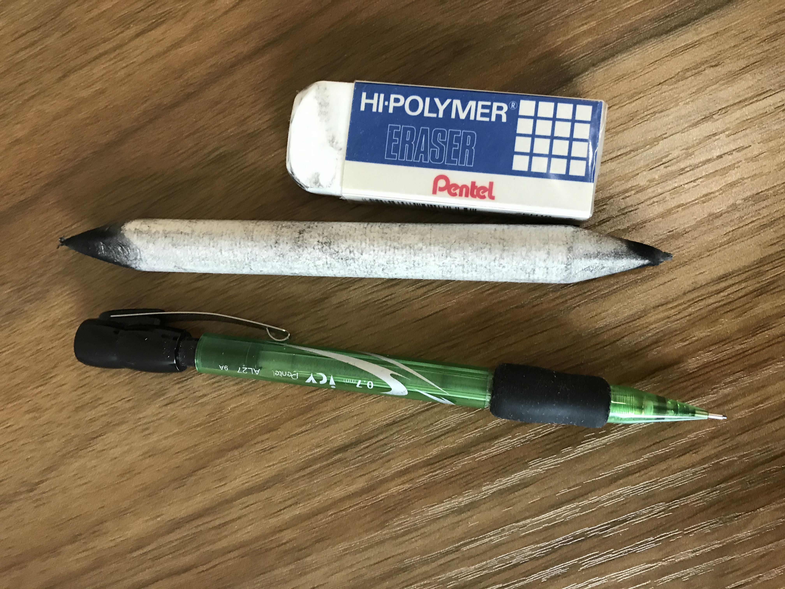
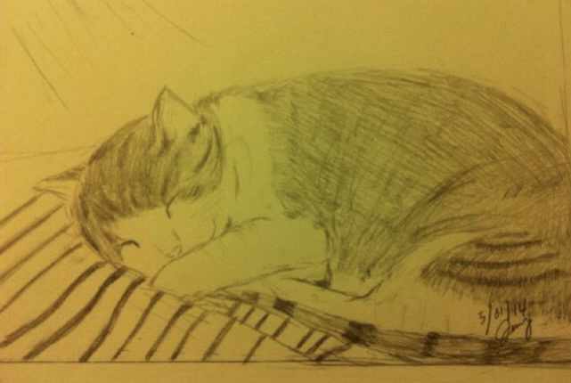
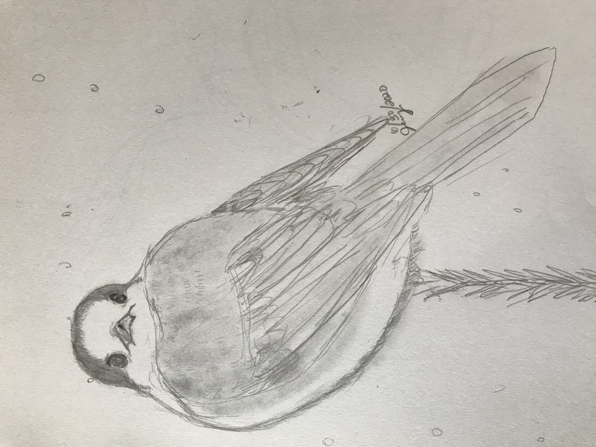

Hello there! My name is Jenny. Have you ever seen something that is really awesome and you want to capture the object in your perspective,
freezing it in that time frame? You can by drawing it. Drawing has become one of my favorite hobbies since a kid. No one is born to know how to draw. With patience and practice, anyone can draw. I am going to show you how to draw, what tools are available and some of my drawings.
“I sometimes think there is nothing so delightful as drawing."
My background in drawing
I come from a family that like to draw. Many people in my family like to draw including my sister and father,
but they are not professional artists just like me. I started to draw when I was kid and the first picture I seriously put effort into
drawing is my little sister standing in the yard and I was really proud of it. From then on, I started to draw human figures, animals,
and flowers whenever I have the time. Drawing really helps me reduce stress and take my mind off everything. It also helps me concentrate on finer details of things.
"In drawing, nothing is better than the first attempt."
Many people take drawing classes to learn techniques and styles, but if you do not have the time or money, you can learn to draw from Youtube videos
or some cheaper classes online such as Udemy. This allows you to watch and learn at your own pace. Youtube has great resources to learn to draw and it is free. Some of them are in series of videos teaching from drawing to shading. But you can also start simply by sketching on a piece of paper. I had not taken any drawing classes but I started doing sketching and practicing to perfect the shapes and details. Many people begin by drawing a circle or oval for the head and another bigger circle or oval for the body and many places teach students to do it that way. For me, I have not been through any training so I am used to drawing the object's face outline and then fill in the details and shaping to match the actual object. After I finish drawing the main feature of the face, I start to draw the body and shape it to make it portionate to the whole picture of the object. Here are steps (tips) to do some basic drawings:
Find a quiet place and time to sit down. Start slowly by finding something simple to draw like a cup or a spoon. As you advance, you can find something harder.
Use a pencil and drawing booklet to start out. Pencil is easy to make adjustments so you can erase any lines that you don't like.
Start by drawing the outline of the object and press lightly so you don't have to erase too hard if you mess up.
Work slowly to shape it similar to your object. Use observation and eye cordination to look at the object's details and try to draw it on to the paper. Also look at the ratio of your object and make sure you match it portionately to your other components.
Take a break if you get stucked with drawing the feature. You can always come back another time to have a fresh perspective so you can see how to draw it.
Practice drawing often to build your skills.
Take a drawing class at a school or online to learn techniques and style and further develop your skills. Check out the websites below for drawing classes:
Many of the tools mentioned below are available in art stores like Blick or Utrecht and they are not very expensive. The electronic tablet can be bought online like Amazon or other electronic stores. Choosing the type tools depend on what types of art you want to do: drawing, painting, oil painting, water color painting and others. If you need help in finding your materials, the store associate can help you. Below is a list for some of the tools for drawing:
Regular pencil and charcoal stump/pencil- These are basic tools for drawing and they are very accessible and inexpensive. I like to use a pencil to draw so I can erase lines as I work on it. This creates a black and white picture that can be vintage and comptemporary at the same time. If I need to blur outlines and add shading, I can use charcoal stump/pencil.
Color pencils and water color pencil- This will add colors immediately to the picture. There are erasable color pencils now in art stores, so no worry if you have alot of corrections.
Papers- There are different type of papers you can choose. It comes different sizes, textures, and thickness. For starter, I would suggest to get a drawing booklet to keep everything in there so you can look back at your drawings to see your improvements.
Electronic tablet with digital pen-I have not used any electronic tools to draw but they are versatile tools that you can buy to use it with a computer. The advantages of using a tablet are that it can be saved as an electronic version and stored safely on the computer or online. Drawing files can be shared immediately by uplaoding to websites or emailing it to people. Other advantage is tablet can be set up to duplicate a larger image on the computer displaying finer details. This technology is very flexible that you can erase, do different layers and experience with colors when it is installed with software. But the downside of this is the price. It is an expensive device costing anywhere from $199.99 and upward. There are cheaper ones without a screen display that only outputs the image to the computer screen. This is not so helpful for beginner because you can't see what you're drawing on the tablet. Overall, this will be worth it as it will increase your drawing productivity.

Color pencils are another great tool. Image by Miesha Maiden

Tablet can hook up to a computer. Image by Daniele

The common tools I use for drawing. Image by Jenny C.
Some of my drawings

One of my older drawings by pencil. Image by Jenny C.

One of recent drawings by pencil. Image by Jenny C.
Draw for fun
Remember to take it for fun. This is a relaxing activity, so it shouldn't be stressful. I have shared with you why I like to draw, the tools and suggestions that will help you to start and some of my drawings. Hope you have enjoyed this and maybe make it as your hobby too. Be an artist in your life and draw all the wonderful things that offer you in this world.
Appendix
Pictures from Pexels.com. Listed by creator's name: